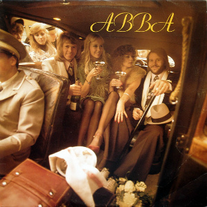

|

|
- «Mamma Mia» (Андерссон, Стиг Андерсон, Ульвеус) — 3:32
- «Hey, Hey Helen» (Андерссон, Ульвеус) — 3:17
- «Tropical Loveland» (Андерссон, Андерсон, Ульвеус) — 3:06
- «SOS» (Андерссон, Андерсон, Ульвеус) — 3:23
- «Man in the Middle» (Андерссон, Ульвеус) — 3:03
- «Bang-A-Boomerang» (Андерссон, Андерсон, Ульвеус) — 2:50
- «I Do, I Do, I Do, I Do, I Do» (Андерссон, Андерсон, Ульвеус) — 3:17
- «Rock Me» (Андерссон, Ульвеус) — 3:06
- «Intermezzo No. 1» (Андерссон, Ульвеус) — 3:48
- «I’ve Been Waiting for You» (Андерссон, Андерсон, Ульвеус) — 3:41
- «So Long» (Андерссон, Ульвеус) — 3:06
|